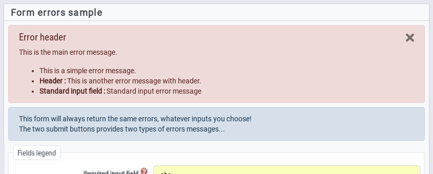

This module is used to display errors messages as alerts, for example in a form.
MyAMS.error.showErrors(parent, errors)This function is used to add an alert into given parent element.

If errors is a simple string or an array of strings, there strings are
simply added to the alert (see alert
module).
If errors is an object, it can provide more informations, including
specific messages for selected input widgets; see Forms
errors to know the format of JSON errors.